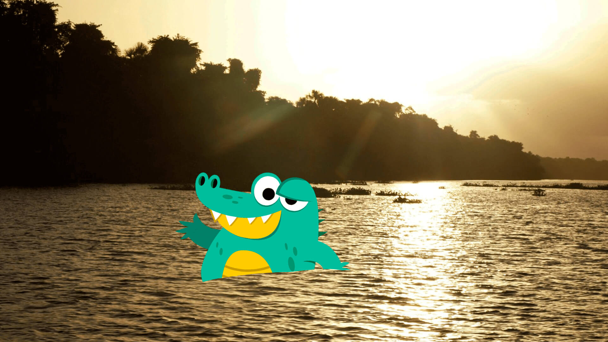
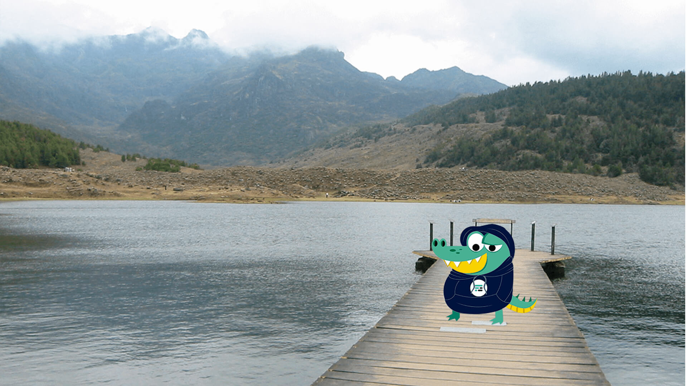
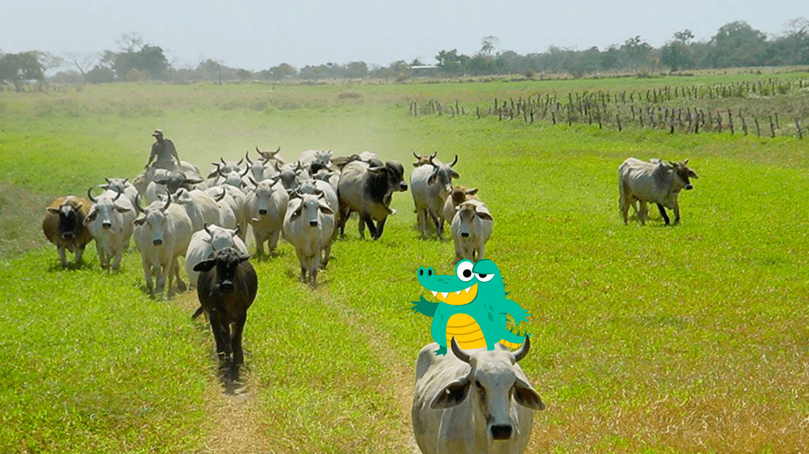
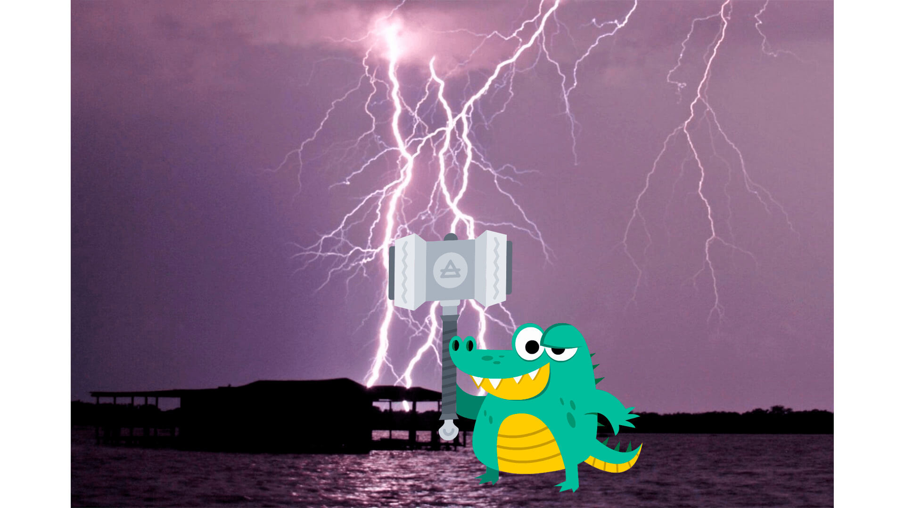
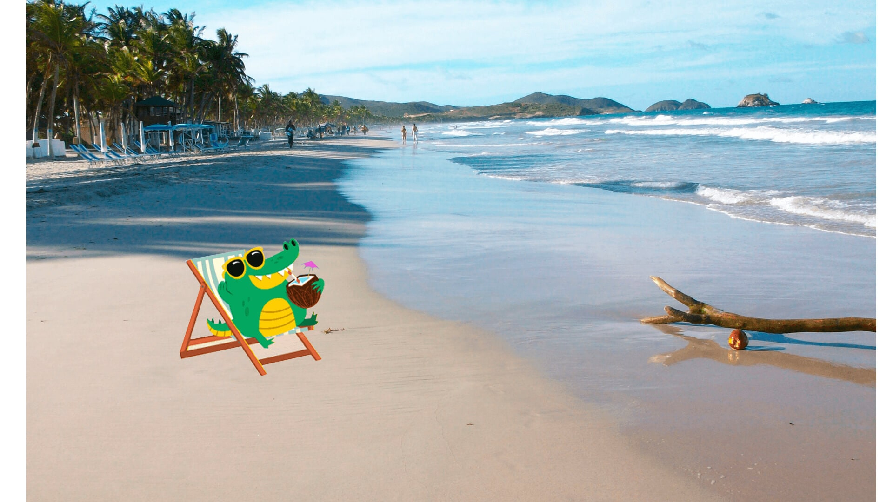
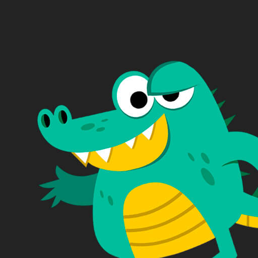

Durante mi viaje en 2019 un país que me marcó mucho fue Venezuela tanto por su sabrosa gastronomía como por su cultura diversa, colorida y divertida, en Venezuela probé la cachapa, la hallaca y la arepa venezolana simplemente quede deleitado con su deliciosa gastronomía, también nade en el río orinoco junto con otros cocodrilos he hice varios amigos  También visité el Salto Angel la cual es la cascada de agua más alta del mundo, con una altura de 979 metros, visite Mérida en donde escuche la leyenda de La loca Luz Caraballo, viaje al Pico El Águila el cual se encuentra a una altura de 4.118 metros sobre el nivel del mar, de regreso pasé por la Laguna de Mucubají y me metí a nadar en esa laguna, cuando salí de ella era cocodrilo congelado  Al dia siguiente fui a la truchicultura, un lugar en el que podías alimentar truchas y si lograbas atrapar una te la podías llevar, probé las empanadas de trucha una verdadera delicia, luego de estar en el frío del estado Mérida me traslade al llano venezolano en Apure en donde probé las deliciosas cachapas acompañas de queso de mano y carne en Vara, tambien conoci un pariente no muy lejano conocido como Baba o caimán de anteojos y con él fui a comer el postre, probé 2 de los dulces típicos de Venezuela, el dulce de lechosa y el quesillo  Y bueno una de las atracciones turísticas de Venezuela que mas me sorprendio fue el Relámpago del Catatumbo en el estado Zulia un fenómeno natural único en el mundo que está ubicado en Venezuela, se trata de un lugar en el que caen una gran cantidad de rayos constantemente, este fenómeno puede alcanzar más de 90 descargas por minuto.  Mi último destino en Venezuela fue el estado Carabobo en donde fui a conocer a mi amigo Wiar8, el me llevo a conocer las hermosas playas de Venezuela visite Puerto Cabello y las playas de margarita, en margarita hice nado con delfines y probé una comida que se suele comer en las playas de Venezuela que consta de un pez llamado pargo rosado, ensalada y una comida común del estado Zulia llamada patacones.  Venezuela fue uno de los paises que mas me gusto visitar conocí nuevas personas, comidas y tradiciones, muchas gracias a codigofacilito por patrocinar mi viaje por el mundo y nos veremos en un próximo post.
Mis vacaciones por Venezuela

Cody Facilito